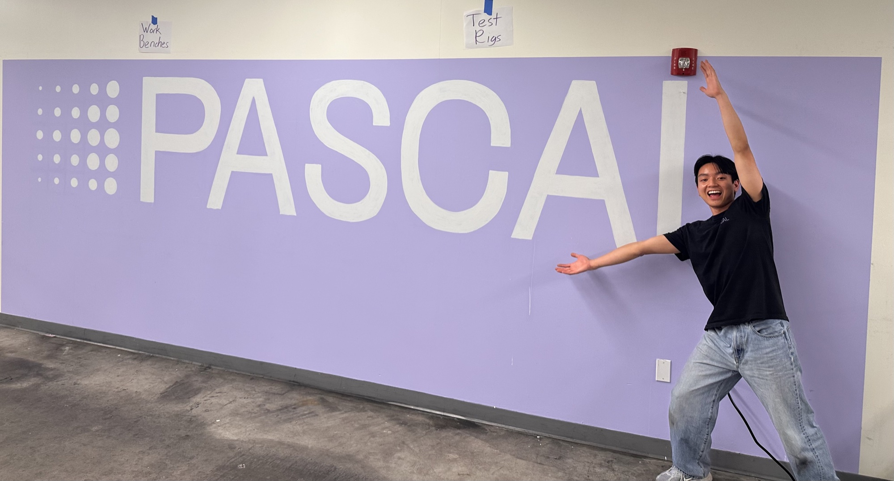

Pascal Technology Internship
May – August 2026 · Mechanical Engineering Intern · Cambridge, MA

Summary: Over the summer of 2026 I worked as a mechanical engineering intern at Pascal Technology, a company that builds refrigeration and compression hardware. I rebuilt a compressor durability test stand with automated PLC control, automated efficiency testing across operating conditions, and produced engineering drawings for critical components. Much of this work is covered by an NDA, so this page describes what I did and the skills involved, not proprietary designs or data.
Skills
- Test stand design and fabrication: tubing, valves and flow-restriction hardware
- PLC programming (TwinCAT) for closed-loop pressure control
- Automated data acquisition from thermocouple, pressure and power sensors
- Engineering drawings and heat exchanger fabrication
- Root-cause analysis of manufacturing defects
Durability test stand
I rebuilt a compressor durability test stand. I fabricated the tubing-coil test volume, the solenoid valve and the orifice system, then programmed TwinCAT PLC control so the stand tracks an ideal pressurization curve. The goal was a rig that cycles a compressor repeatably, so wear could be compared fairly from one test to the next.
Automated efficiency testing
I automated efficiency testing of reciprocating-piston compressors across a range of speeds, inlet pressures and pressure ratios. Thermocouple, pressure and power data were collected automatically, so each operating point could be run and recorded without manual intervention.
Drawings, heat exchangers and defects
I produced engineering drawings for critical refrigerator components. I also supported heat exchanger fabrication and took part in the root-cause analysis of pinhole defects.
Takeaways
This was my first full-time engineering role. It taught me how a test rig is built to answer a specific question, how controls and mechanical design depend on each other, and how to communicate results clearly inside a team while respecting what can and can’t be shared.